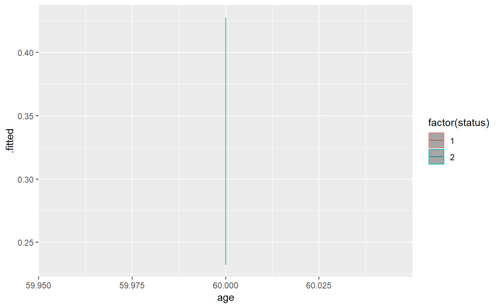
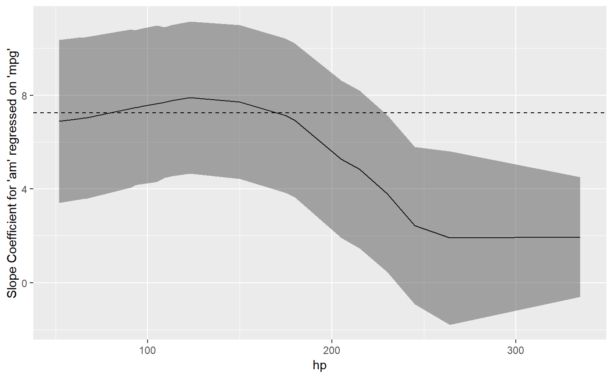

The goal of sjosmooth is to provide kernel smoothed estimates for time to event data.
Example
This is a basic example which shows you how to solve a common problem:
library(sjosmooth)
library(purrr)
library(dplyr)
library(tidyr)
library(ggplot2)
library(survival)
sm_predict(
data = lung,
method = "coxph",
formula = Surv(time, status) ~ age,
type = "survival",
lambda = 2,
newdata = lung %>% mutate(time = 500, age = 60) %>% select(time, status, age) %>% distinct()
) %>%
arrange(age) %>%
ggplot(aes(x = age, y = .fitted, color = factor(status))) +
geom_line() +
geom_ribbon(aes(ymin = .fitted.ll, ymax = .fitted.ul), alpha = 0.4)
sm_regression(
data = mtcars,
method = "lm",
formula = mpg ~ am,
weighting_var = "hp",
lambda = 2
) %>%
mutate(
# tidying model
model_tidy = map(
model_obj,
~broom::tidy(.x, conf.int = TRUE) %>%
dplyr::filter_(~term == "am")
)
) %>%
select(newdata, model_tidy) %>%
unnest(newdata) %>%
unnest(model_tidy) %>%
ggplot(aes(x = hp, y = estimate)) +
geom_line() +
geom_ribbon(aes(ymin = conf.low, ymax = conf.high), alpha = 0.4) +
geom_hline(
yintercept = lm(mpg ~ am, mtcars) %>% coef() %>% purrr::pluck(2),
linetype = "dashed"
) +
labs(
y = "Slope Coefficient for 'am' regressed on 'mpg'"
)